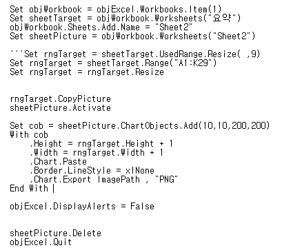
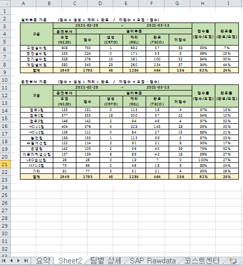
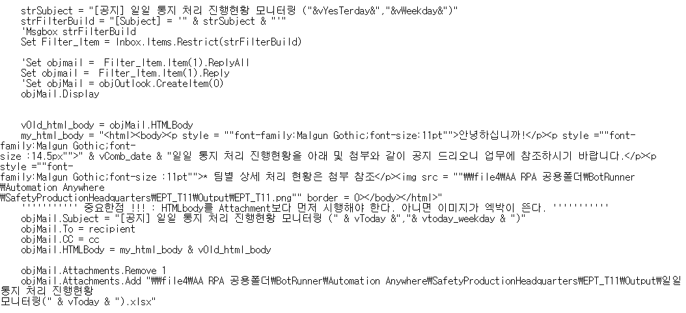
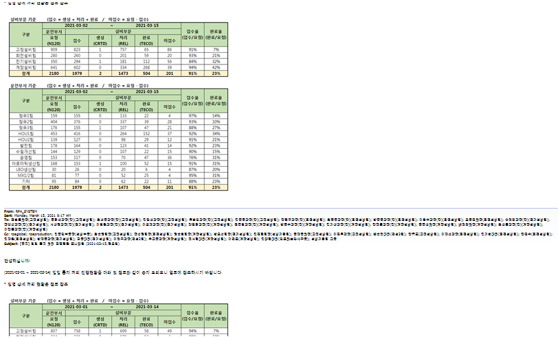

Chapter 2 VBscript Code
RPA Solution과 VBScript를 조합하여 업무자동화의 효율성을 증진
본 업무에 사용한 VBScript code를 간략하게 소개
2.1 VBScript code review_01
2.1.1 Excel의 Table 캡처 및 이미지 저장 기능

Figure.1 Script 내용
* "A1:K29" cell 범위가 Table 전체 범위
* rngTarget object의 CopyPicture method를 이용하여 picture 생성
* sheet2를 만들어서, 여기에 chart 생성 및 picture를 chart에 붙여넣기
* PNG 형식으로 다른이름으로 저장

Figure.2 Script 실행 결과
"요약"sheet에 있는 Table을 캡처 / "Sheet2" sheet를 생성한 뒤 캡처한 이미지 복사
2.2 VBScript code review_02
2.2.1 Outlook 메일 전송 : 본문에 파일 첨부 및 HTML 문법 적용

Figure.1 Script 내용
* 제목이 "[공지] 일일 통지 처리 진행현황 모니터링 ( 어제날짜, 요일)"인 메일을 찾는다.
* 메일을 찾으면, outlook 메일의 "reply" 속성을 선택한다.
* 메일 본문에 작성할 내용을 HTML문법에 맞게 작성한다.
* objMail object의 HTMLBody method를 통해, 작성한 본문을 적용한다.
* objMail object의 Attachments method를 통해, 기존의 첨부파일을 삭제하고, 새로운 파일을 첨부한다.

Figure.2 Script 실행 결과
"특정 제목의 메일을 찾아서 "reply" 선택 / 새로운 첨부파일 업로드 및 본문작성